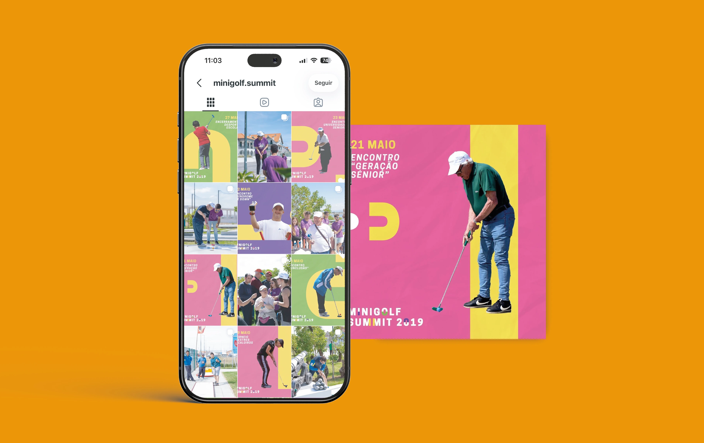
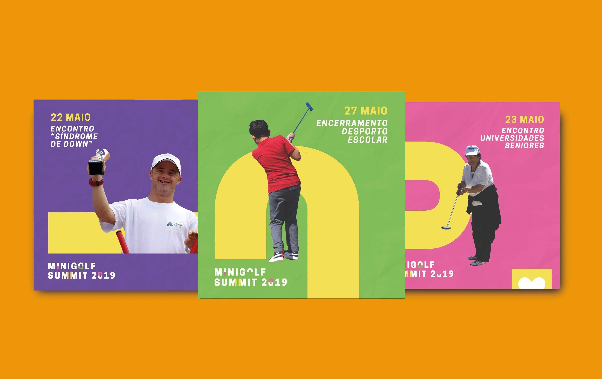
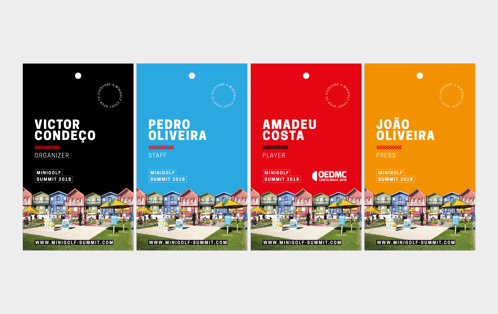

Minigolf Summit is a series of events built around a simple idea: minigolf is a sport everyone can play. The events use sport to bring people together, promote social inclusion and encourage young people to lead more active, healthier lives.
- Project
Minigolf Summit
- Scope
- Visual identity and digital communications

The brief
The goal was to show how sport can support inclusion and wellbeing for participants, representatives and the wider public. I developed the visual identity and digital strategy, built the website, distributed press releases and managed Facebook and Instagram.
Content and event coverage
I created photo carousels, videos and Instagram Stories tailored to minigolf and the events. I also helped produce and cover the events through interviews, news updates, photography and video.
On Facebook and Instagram, I tracked follower growth, engagement and likes.


Results
The project also led to more events and partnerships with social institutions.
- 16+Local sponsors